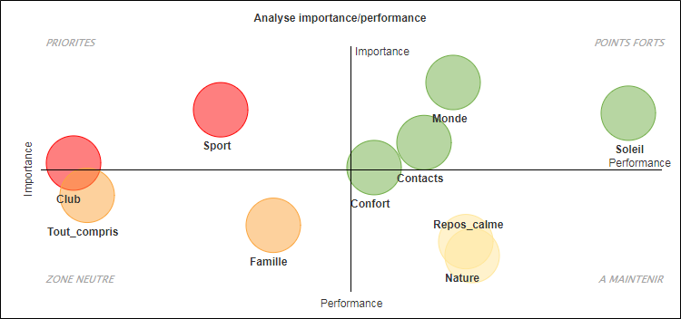
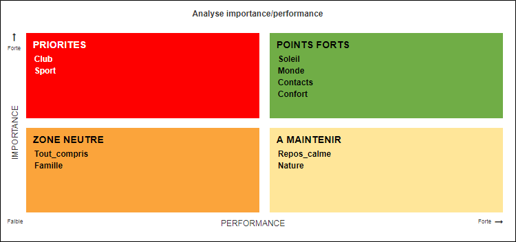
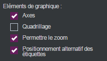

Réaliser une matrice Importance / Performance
La matrice importance/ performance est utilisée notamment dans le cadre des enquêtes de satisfaction. Elle permet d’établir la satisfaction globale du répondant et l’importance accordée à certains critères évalués.
EXEMPLE : Dans une enquête portant sur le tourisme, on peut vouloir identifier parmi les critères de vacances idéales ceux qui influent le plus la satisfaction globale.
Pour réaliser une matrice importance / performance, procédez comme suit :
-
Cliquez sur le bouton
 .
. -
sélectionnez Analyse avancée.
-
Cliquez sur Analyse Importance/Performance.
-
Sélectionnez les variables en ligne qui correspondent aux différents critères évalués.
-
Sélectionnez la variable avec laquelle les critères évalués seront mis en corrélation (généralement il s'agit de la satisfaction globale).
Les critères vont ainsi être présentés sur une matrice avec deux dimensions :
-
Axe vertical : l’importance qui se mesure par le coefficient de corrélation de chaque critère avec la satisfaction globale. Ainsi plus la corrélation entre un critère et la satisfaction globale est forte, plus ils sont liés et donc, plus le critère est important.
-
Axe horizontal : la performance qui se mesure par la satisfaction moyenne du critère sur l’ensemble des répondants.
-
-
(Facultatif) Modifiez le nom des axes et des différents quadrants si besoin.
-
Cliquez sur Terminer.

Une fois la matrice réalisée, il est possible de changer les variables en sélectionnant l’analyse et en cliquant sur  ou en faisant clic droit éditer sur l’analyse.
ou en faisant clic droit éditer sur l’analyse.
La matrice Importance/Performance peut être présentée sous la forme d'une carte ou d'une grille :
 Carte |
 Grille |


Dans l’onglet options, catégorie graphique, il est possible de sélectionner taille proportionnelle aux effectifs. Ainsi, la taille des bulles sera proportionnelle aux effectifs des variables étudiées.
La matrice est composée de quatre zones :
-
Une zone de progrès (zone prioritaire) : le critère n’est pas très bien évalué par les individus même s’il est important pour eux.
-
Une zone d’excellence : le critère est très bien évalué et important pour les individus.
-
Une zone neutre : le critère n’est pas très bien évalué, mais il n’est pas très important pour les individus.
-
Une zone de sur-qualité : le critère est bien évalué par les individus, mais il n’est pas très important pour eux.
Dans le cas d’une matrice importance/performance, il peut y avoir beaucoup de variables ce qui rend la lisibilité du graphique difficile. Vous pouvez alors zoomer sur certaines sections afin de voir de plus près une zone intéressante lors de la prévisualisation.
Pour zoomer, il faut sélectionner permettre le zoom dans les éléments du graphique.

Dans la prévisualisation il faut placer le curseur sur une partie du graphique, cliquer glisser et faire un carré autour de la zone à zoomer. Ensuite il sera possible d’annuler le zoom en cliquant sur le bouton  .
.